きっかけはひとつの記事だった。
ネットで偶々見かけた高知新聞の記事。
「
観音像 山切り開き安置 土佐市の男性 半世紀かけ」
この記事を要約すると土佐市某所に石材業を営んでいた
I さんという方が
独力で観音霊場を造り上げたという。
記事は続く。
ある日、I さんが所有する山で観音様から「おまんにこの山をあげる」と天啓を受けたのだそうな。
そこで、I さん、一念発起して山を整備し、
一大霊場を手作業で造り上げた、というストーリーであった。
その名は
観音丘。
私はこの話にいたく感じ入り、直接この観音丘を訪れてみようと高知に赴いたのであった。
問題はこの観音丘がどこにあるのか？だ。
新聞記事の文中には大まかな場所が記述されていたが、地図で確認する限りそれらしきところが全く見当たらない。
宗教法人の寺院ならともかく、個人で造った霊場だけに表記もなにもないわけで、まあ判らない。
グーグルマップのストリートビューや航空写真をにらめっこしてそれらしき場所を何となく特定しつつ、あとは現場当たりじゃ、と向かった次第。
で、やってきました土佐市に。
土佐市とは県都高知市の西に隣接する市である。
早速当たりを付けたエリアに行ってみるも全くそれらしき霊場は見当たらない。
ここはいつもの通り「
見かけた住民に片っ端から声をかけて聞く作戦」を発動する。
すると数人目の方から「ああ、この先のパーッと分かれちゅう所の真ん中を山に向かってドーンと行ったらあるき」的なかなりアバウトな案内を賜った。
若干不安はあるが取り敢えず、行ってみよう！
で、バーっと分かれちゅう所の近くにこんな標識が。
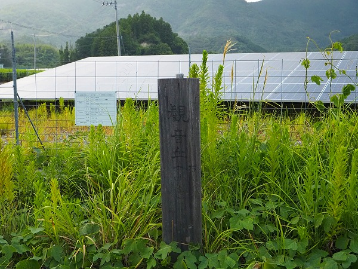
おおお。
観音丘と書いてあるではないか。
案内の通り山に向かって行ったらそこは
ソーラーパネルが延々と並んでいるエリアだった。
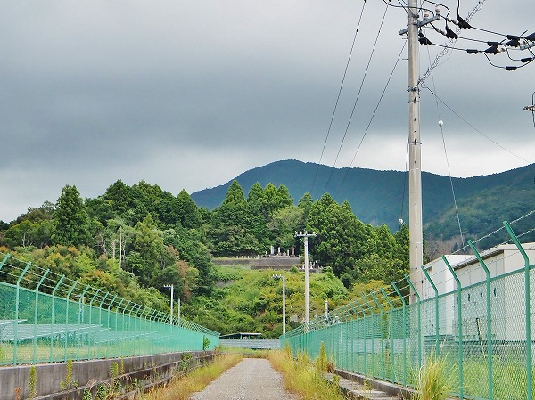
その先に小高い丘があり、その中腹に
かすかに石仏らしきものが見えた。
迷うことなくドーンと行ってみる。
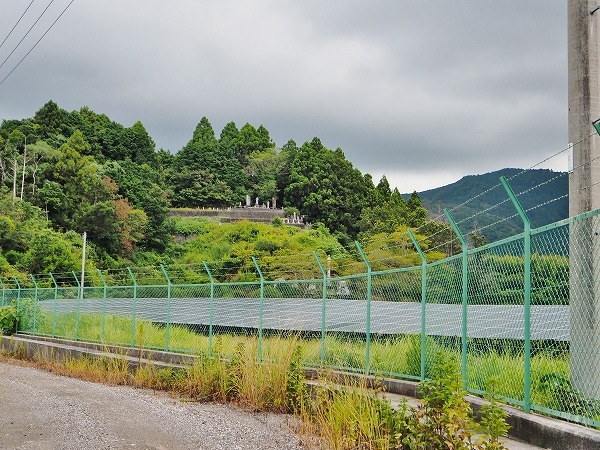
おお、ついに見つけたぜよ、観音丘。
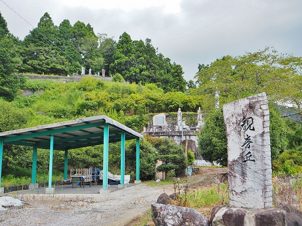
到着。
車を停めて眺めてみる。
思いの外大規模な霊場だ。
記事では個人で造った霊場とあったのでもっとこじんまりした所を想像していたがなかなかのものだ。
山の斜面に数か所石を積んで平地を造成している。
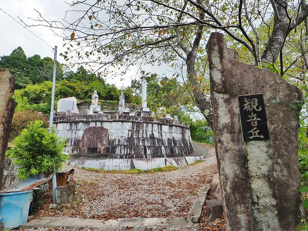
早速お邪魔してみる。
まずは最初の霊場。
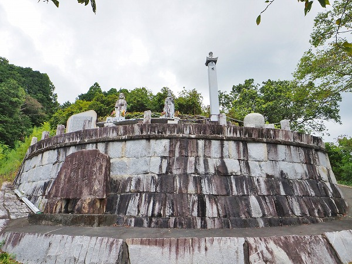
石を積んで
半円状の舞台のような霊場が現れる。
その上には石塔や記念碑、石像などが並んでいる。
気になるがまずは上を目指そう。
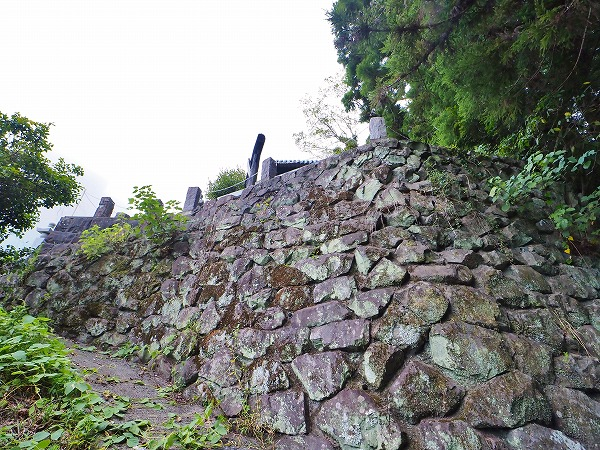
先程は四角く製材された石垣だったが、こちらは城垣のような積み石。
石材業を営んでいた、というが中々凄い迫力だ。
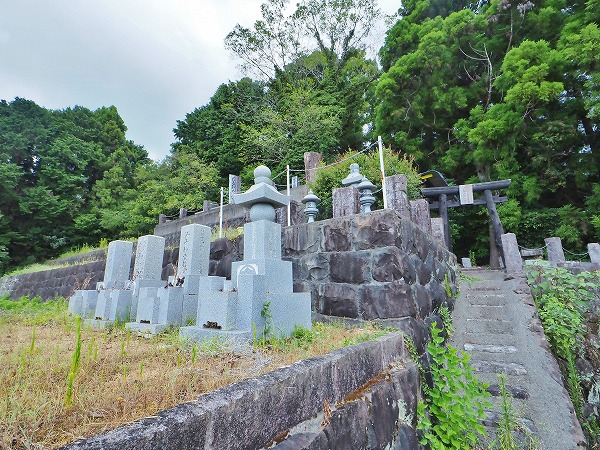
どんどん登ってみる。
墓石もある。個人の墓なのだろう。
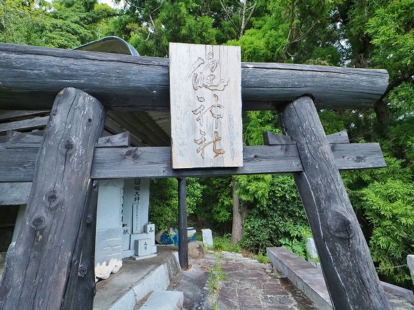
鳥居があった。
もちろん潜りますよ。
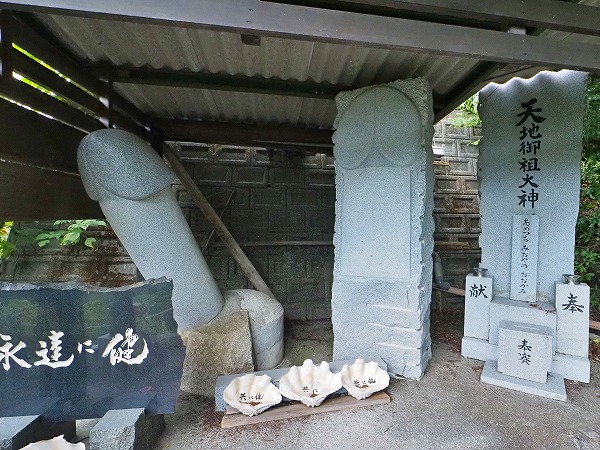
鳥居の先には
巨大なチンチンが。
石だけにカチンカチンですわ！
ついでにレリーフ状のチンチンも珍しい。
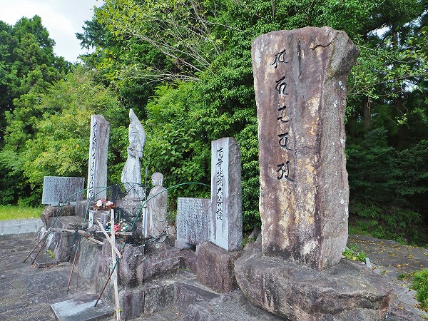
そうこうしている内に一番上のエリアに到達した。
全部で6ステージあったのかな。
巨大な石碑と石像が並んでいた。
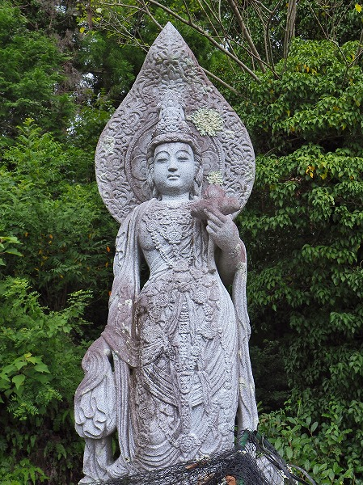
観音像。
精緻な造りで装飾が細かく、顔が美しい。
明らかにプロの作品だ。
記事にあった愛知の名高い仏師の作、というのはこの観音像で間違いないだろう。
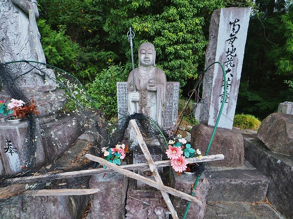
隣にはお地蔵さん。
金属のアーチや網は供え物が鳥や獣に荒らされないように被せてあったものと推測できる。
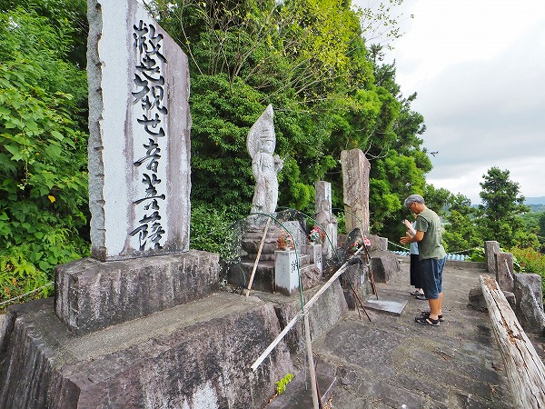
そうこうしているうちに下から3人の人たちが登って来た。
私同様、セルフ霊場マニアか？と思ったらなんとこの霊場を造った
Iさんのお子様方であった。
Iさんは残念ながらお亡くなりになり、今年は新盆なのでお参りに来たとの事。
折角なので少し話を伺う。
曰くこの霊場は石材業を営む父（Ｉさん）がほぼ独力で造ったという。
しかし基壇部は地元の建設会社が手掛けた。
そしてこの霊場のメインとなる観音像2体は
愛知県岡崎市の有名な石仏師が手掛けたそう。
岡崎市といえば石材の産地であると同時に腕のいい石仏師や石工が数多いるところで有名な街だ。
あと観音様の隣にあるお地蔵さんはI さんの作だそう。
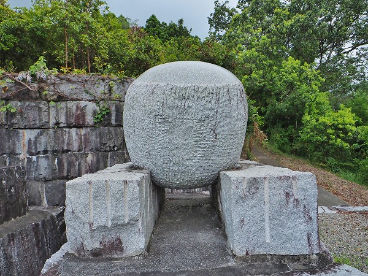
最初に見た一番下の半円状のステージに戻る。
球体の彫刻作品。
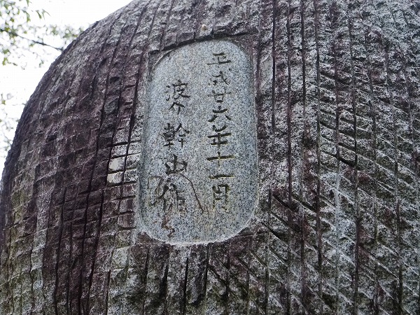
裏書。
波介とはここの地名。
幹山とはI さんの雅号だと思う。
ちなみに霊場内の石碑の文字もI さんが書いたものだそうだ。
つまり石彫、造作、書も手掛ける
マルチアーティストでありマルチ職人だったのですな。
リスペクトです。
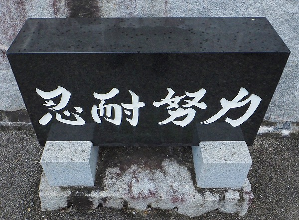
何もない丘陵地を開墾し霊場に仕立てたその様は正に忍耐と努力の連続だったことだろう。
この事業を始めてからは「
仕事を放ってでもやりよった」そうだ。
そこまでのモチベーションを高め、保ち続けた原動力は一体何だったのだろう？
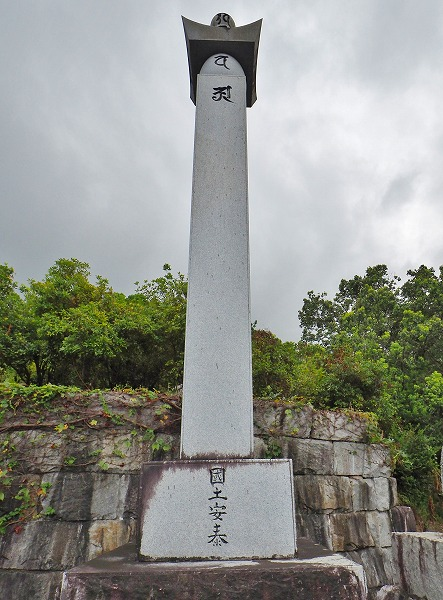
この観音丘で一際高い五輪塔。
台座に國土安泰とある。
完成までに半年を要したという大作だ。
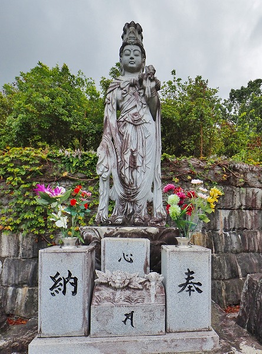
観音像。
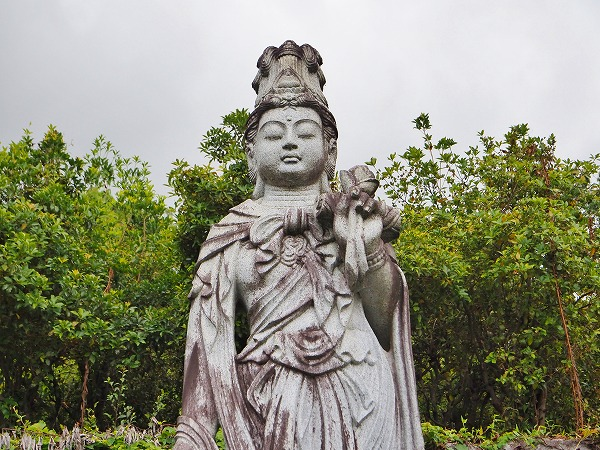
表情の美しさや衣の優美な表現からして
先程の観音様と同じ愛知県の石仏師の作かと思われる。
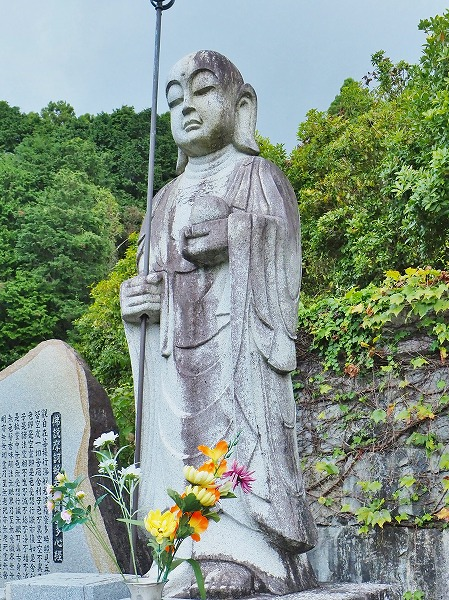
こちらはI さん作のお地蔵さん。
先程のお地蔵さん同様少しへの字口なところがチャームポイントだ。
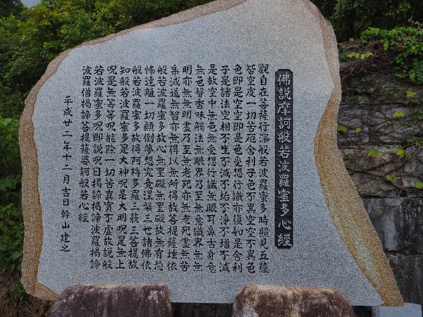
般若心経の石碑。
平成22年のもの。
先程の石彫作品は平成26年だった。
ついでに言うと先程の2体の観音像は昭和61年と平成20年だという。
案外制作年代に結構な差がある。
そしてこの霊場の完成は令和2年の秋、という事になっている。
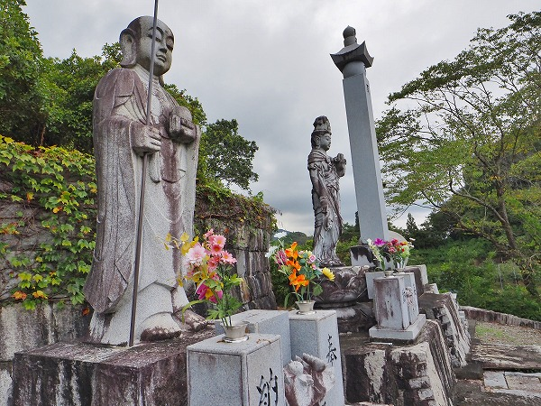
これをどう読むか。
観音丘に設置されているモニュメントは
ほとんど平成20年代のものだ。
この時期にI さんは「仕事を放ってでも」観音丘の造成を行っていたのだろう。
その後周辺整備（駐車場や道路）を行い、令和2年に完成したわけだが、最初の観音像の昭和61年という年代がずば抜けて古い。
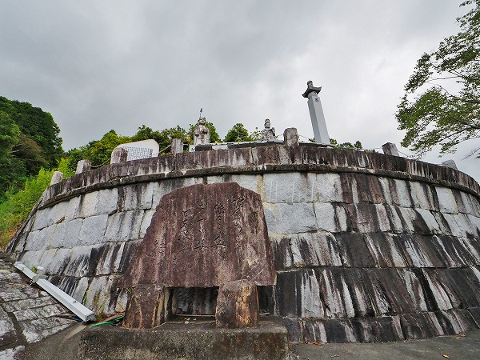
ここからは個人的な妄想に入る。
つまりその観音像の存在が最初にあり、
その観音像を設置するための舞台装置がこの観音丘そのものだったのではないだろうか。
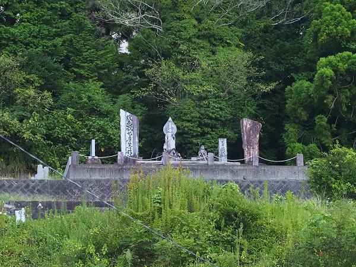
I さんの最初の宗教的衝動は昭和61年に手にした観音像をどのように設置したらいいのか、という点だったのだろう。
それを考えているところに「偶然」にも天啓を受けて観音丘を造る事を決意した、という流れかと想像する。
いずれいせよ個人でここまでの規模の霊場を造り上げた意志の強さと努力には
ただただ頭が下がる思いでしかない。
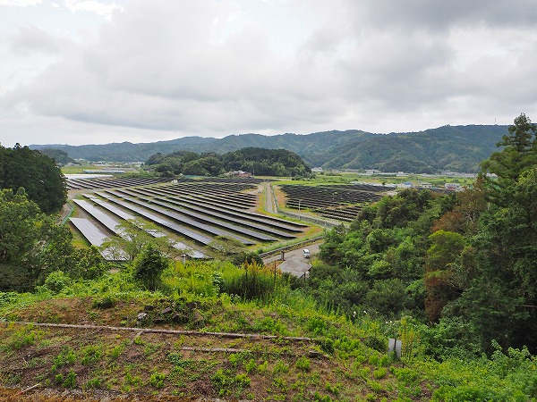
丘の上から下界を見下ろす。
ソーラーパネルが際限なく広がっている。
急に暗雲が垂れこめてきた。
この直後、激しい雷と共に凄い雨が降って来たので早々に退散する羽目になったよ…。